In this lab we will setup simple Bolt forming operation in MO 3D forming express operation. In this Forming operation we have 3 stages:
Extrude operation : In this operation, we are extruding the workpiece.
Cone blow operation: In this operation, we are upsetting the top side of the workpiece.
Hex Head operation: In this operation, we are giving Hexagonal shape to the top surface of the workpiece.
After completion of Forming operation, we will be doing Die stress to investigate stresses in the Top die.
Operation 1 : Extrude operation
Operation 2 : Cone blow Operation
Operation 3 : Hex head operation
Operation 4 : Die Stress Operation
On a Windows machine, go to the  button select DEFORM-v1x.xxx (.xxx indicates version number E.g. v14.0.2)
and select DEFORM GUI Main vxx.xx from the menu. The DEFORM GUI Main window will appear, as shown in Fig. 3DCFL1.1.
button select DEFORM-v1x.xxx (.xxx indicates version number E.g. v14.0.2)
and select DEFORM GUI Main vxx.xx from the menu. The DEFORM GUI Main window will appear, as shown in Fig. 3DCFL1.1.
DEFORM GUI Main window
Create a new problem either by selecting File  New Problem or by clicking the New Problem
New Problem or by clicking the New Problem  icon. The Problem Setup window will appear as shown in Fig. 3DCFL1.2. Select "Integrated Manufacturing Process"
radio button and unit system as "English" radio button in unit field. Define Problem Name as "3D_Bolt " and make sure the “Show option dialog” check box is turned
on (if we do not turn on the “Show option dialog” check box, then we will not get the New Project dialog in MO UI). Then click on
icon. The Problem Setup window will appear as shown in Fig. 3DCFL1.2. Select "Integrated Manufacturing Process"
radio button and unit system as "English" radio button in unit field. Define Problem Name as "3D_Bolt " and make sure the “Show option dialog” check box is turned
on (if we do not turn on the “Show option dialog” check box, then we will not get the New Project dialog in MO UI). Then click on  button to open
a new Problem using the Deform Integrated Manufacturing Process.
button to open
a new Problem using the Deform Integrated Manufacturing Process.
Problem type selection window
Multiple operation wizard will open with the New Project dialog (see Fig. 3DCFL1.3.), at this point user will be prompted to specify
a project name (system will create a separate folder with this project name) and title for this session. In this session we will use "3D_Bolt " as the project name. Click on  to continue to open the operation.
to continue to open the operation.
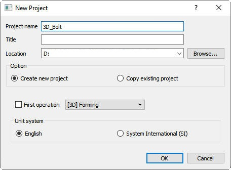
MO Wizard New Project
Once you click on  button, a Multiple Operation wizard will open to setup the problem. In this lab, we are showing how to setup all 3 operations in batch mode. Add three 3D Forming express
operations from Operation list in Explorer. Operation can be added by clicking on
button, a Multiple Operation wizard will open to setup the problem. In this lab, we are showing how to setup all 3 operations in batch mode. Add three 3D Forming express
operations from Operation list in Explorer. Operation can be added by clicking on  button next to 3D Forming express operation or user can also add by drag and drop into the Operation
Editor.
button next to 3D Forming express operation or user can also add by drag and drop into the Operation
Editor.
Change operation name:
Change the Operation name to "Extrude" by double click on Forming field in Operation editor as shown in Fig. 3DCFL1.4.
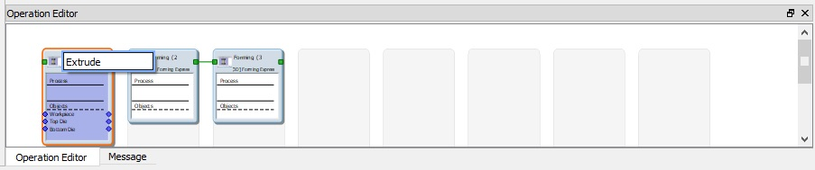
Editing Operation name
In Process page, select Process type as Cold Forming, select Whole part Geometry type.
The shape complexity and simulation accuracy slider bars influence the mesh settings and number of time steps used in the simulation. This in turn, influences the run time and level of details available in the simulation.
For this simulation, we will use complexity as Simple and Moderate accuracy, set the slider bars as shown in below Fig. 3DCFL1.5., click
 .
.
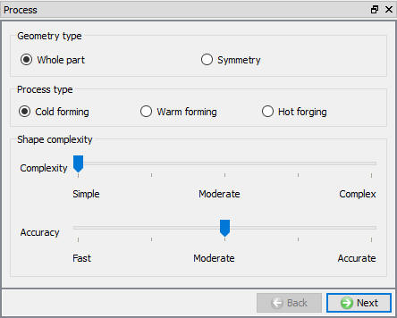
Process page
In this operation we will use 1 workpiece + 2 dies as shown in Fig. 3DCFL1.6., click  .
.
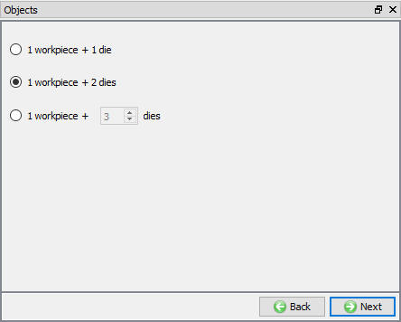
Number of Objects selection page
Use default Workpiece object name and Default Object temperature, click  .
.
Note: there is an button on the “Object” page. This is for importing complete object data from another DEFORM file, we will not use this at this time.
In Geometry page, click on Load Geometry from Library  button, Import bolt-cutoff.STL file as shown in Fig. 3DCFL1.7.
button, Import bolt-cutoff.STL file as shown in Fig. 3DCFL1.7.
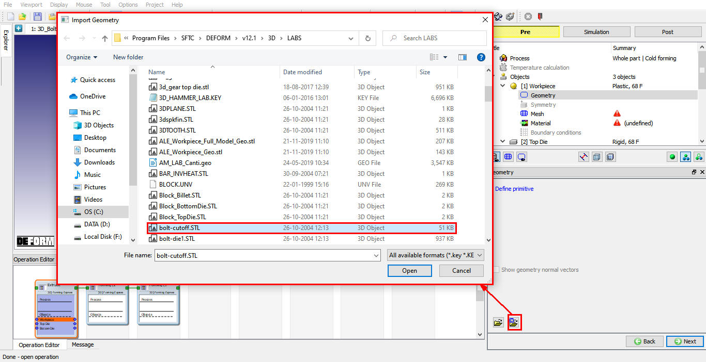
Import object page
Click  geometry. A description of what constitutes a legal geometry is given in the GEOMETRY CHECKING RESULT window as shown in Fig. 3DCFL1.8. The geometry of the bolt cutoff is legal. Then click
geometry. A description of what constitutes a legal geometry is given in the GEOMETRY CHECKING RESULT window as shown in Fig. 3DCFL1.8. The geometry of the bolt cutoff is legal. Then click  .
.
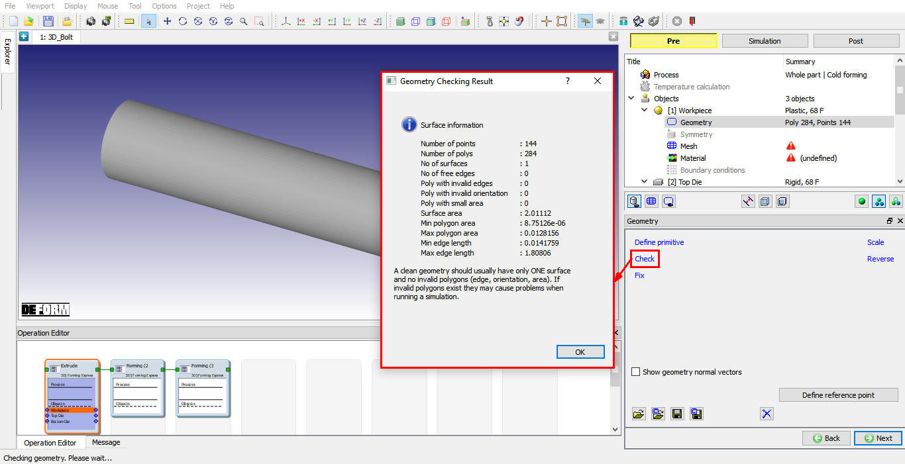
Geometry checking page
Use the  button to generate a surface mesh with the default number of elements. For the current settings used in Objects Shape Complexity, the default number of solid elements
is 52000 as shown in Fig. 3DCFL1.9.
button to generate a surface mesh with the default number of elements. For the current settings used in Objects Shape Complexity, the default number of solid elements
is 52000 as shown in Fig. 3DCFL1.9.
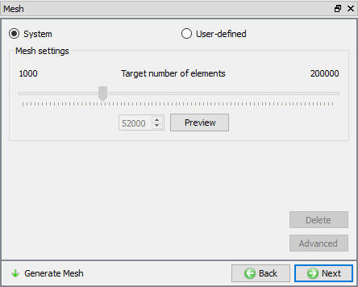
Mesh window in system mode
Go to Objects Shape Complexity and change Accuracy slider bar from Moderate to Fast. Go back to the Mesh screen and  the mesh again. This time the default number of elements went
down to 16,000. Similar results occur when changing the Accuracy slider bar.
the mesh again. This time the default number of elements went
down to 16,000. Similar results occur when changing the Accuracy slider bar.
Select User defined radio button, Click on the  button, select Min Element Size and enter an element size of 0.02” and use a Size ratio of 1 as shown in Fig. 3DCFL1.10. Click
button, select Min Element Size and enter an element size of 0.02” and use a Size ratio of 1 as shown in Fig. 3DCFL1.10. Click
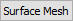
. The resulting surface mesh will be uniform with elements approximately .020”.
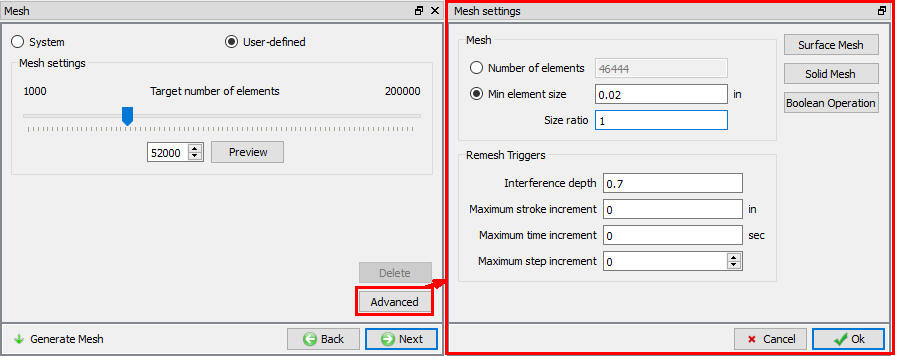
User defined Mesh advanced
The final mesh we generate will be used with subsequent simulations. Go back to Objects Shape Complexity, and change the slider bars back to Simple complexity and Moderate accuracy. Click on Mesh under Workpiece in the project tree, and then Generate
mesh by clicking on  (
(  will only generate a surface mesh while will create a surface mesh and then a solid
mesh).
will only generate a surface mesh while will create a surface mesh and then a solid
mesh).
In Material window, load the material AISI-1010,COLD[70F(20C)] from DEFORM Material library, from Steel category using  (Load material data
from library) option. This can be done as shown in Fig. 3DCFL1.11. by clicking
(Load material data
from library) option. This can be done as shown in Fig. 3DCFL1.11. by clicking  button. Material can also be loaded from Materials list in Explorer then click
button. Material can also be loaded from Materials list in Explorer then click  until Top Die page.
until Top Die page.
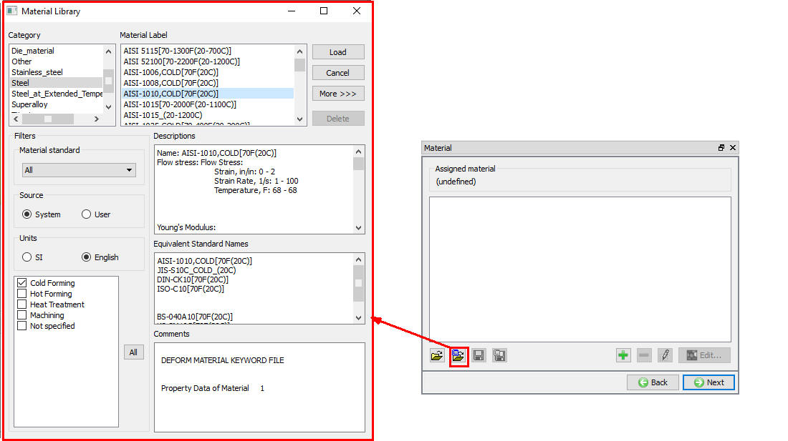
Material Library window
In Top Die page, change the object name as Punch and use the default Object Temperature (68F), click  .
.
Import bolt-punch1.STL file using Load Geometry from Library  button as shown in Fig. 3DCFL1.12.,
then check the geometry using
button as shown in Fig. 3DCFL1.12.,
then check the geometry using  option. Click
option. Click  .
.
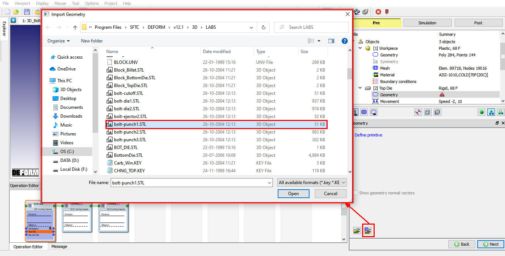
Importing Top die geometry
Select speed under the movement options. Be sure movement is in the –Y direction, enter a speed of 10 in/sec as shown in Fig. 3DCFL1.13. Click  .
.
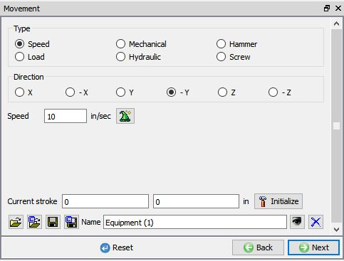
Punch movement page
In Bottom Die page, Use the default Object temperature (68F), Click  .
.
Click on Load Geometry from Library  button, Import bolt-die1.STL file. Then check the geometry using
button, Import bolt-die1.STL file. Then check the geometry using  option. Click
option. Click  .
.
Click on  button object positioning page will open, Select
button object positioning page will open, Select  positioning and select Workpiece
as Positioning object and Die as Reference. An approach direction of –Y should be used as shown in Fig. 3DCFL1.14.,
click
positioning and select Workpiece
as Positioning object and Die as Reference. An approach direction of –Y should be used as shown in Fig. 3DCFL1.14.,
click  . Similarly Position the Punch to contact the Workpiece using
. Similarly Position the Punch to contact the Workpiece using  method with approach direction of –Y. The
workpiece is positioned on the die and Punch is positioned on the Workpiece such that they are in contact with each other. Click
method with approach direction of –Y. The
workpiece is positioned on the die and Punch is positioned on the Workpiece such that they are in contact with each other. Click  .
.
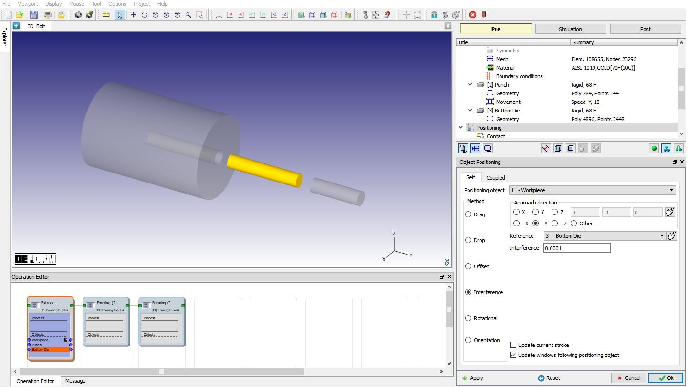
Object positioning window
In the Contact section of the tree, by default the system defined default friction coefficient of 0.08 will be assigned, which corresponds to cold forming using carbide dies (see Fig. 3DCFL1.15.).
By selecting User defined radio button user can also define other friction values if needed by using pull-down menu. DEFORM automatically determines an appropriate contact tolerance for this model. Click  . You should be able to see the contacts between the Workpiece and other objects. Click
. You should be able to see the contacts between the Workpiece and other objects. Click  .
.
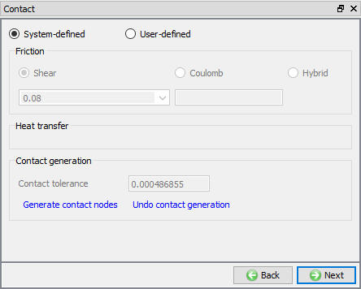
Contact relation definition window
For this problem, we will extrude a distance of 0.35” as shown in Fig. 3DCFL1.16., so enter 0.35"
in the Total primary die travel field then click  .
.
Primary die travel definition window
We want to stop the simulation when the punch has moved 0.35”. Click Stopping Controls in the tree and check the Die stroke exceeds the value option. The value 0.35” defined in total primary die travel
will be automatically placed in this field as shown in Fig. 3DCFL1.17. Click  .
.
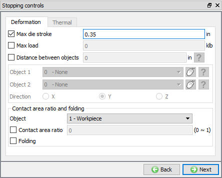
Stopping controls window
The number of simulation steps and the step increment are established by the Object Shape Complexity slider bar settings. If you want to change the default values, you can do by selecting user type radio button and define step definition. We will accept the default values for this lab.
In Generate DB page. Click the  button to have the program check to see if anything was missed in the problem setup. During the checking process,
button to have the program check to see if anything was missed in the problem setup. During the checking process,
Messages in the red color signify data that needs to be fixed before a simulation can be run (such as when you forget to define any material data).
Click on  button to generate the database. When the program is done writing the database, click on
button to generate the database. When the program is done writing the database, click on  tab to go to
Next operation.
tab to go to
Next operation.
In this operation, we are importing new tools and changing Dies geometry.
Change operation name:
Change the Operation name to "Cone Blow" in Operation editor as shown in Fig. 3DCFL1.18.
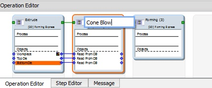
Changing operation name in Operation Editor
Leave the Complexity as Simple and change the Accuracy to the tick mark between Fast and Moderate as shown in Fig. 3DCFL1.19. Click  .
.
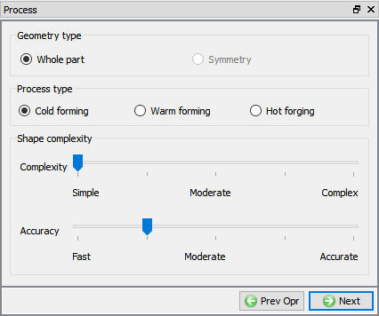
Process page
This operation will need one more object, so change the setting to 1 workpiece + 3 dies as shown in Fig. 3DCFL1.20.,
click  until Top die page.
until Top die page.
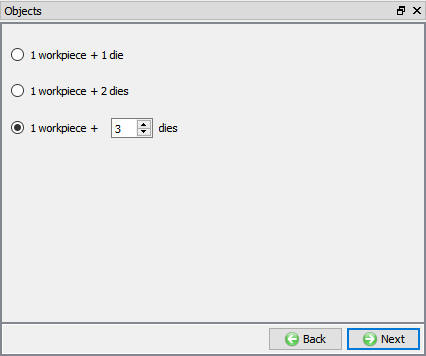
Number of Objects selection page
In Object page, select Define radio button as shown in Fig. 3DCFL1.21. and change the object name as Punch,
click  .
.
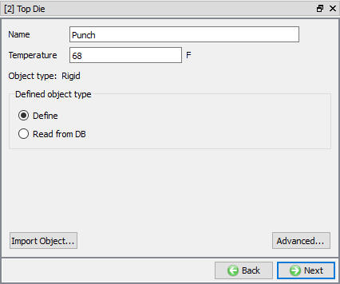
Top Die page
Click on Load Geometry from Library  button, Import bolt-punch2.STL file. Then check the geometry using
button, Import bolt-punch2.STL file. Then check the geometry using  option. Click
option. Click  .
.
Use the previous operation's movement data, Click  .
.
In Object page, select Define radio button, click  .
.
Click on Load Geometry from Library  button, Import bolt-die2.STL file. Then check the geometry using
button, Import bolt-die2.STL file. Then check the geometry using  option. Click
option. Click  .
.
Change the Object 4 name to Ejector, then click  .
.
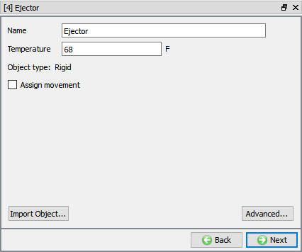
Ejector page
Click on Load Geometry from Library  button, Import bolt-ejector2.STL file. Then check the geometry using
button, Import bolt-ejector2.STL file. Then check the geometry using  option. Click
option. Click  unitl Scheduled positioning page.
unitl Scheduled positioning page.
Using Interference positioning we will be positioning the Workpiece to the Die (-Y approach direction) and then the Punch to the Workpiece. In Scheduled positioning page, Click on  button
and select
button
and select  radio button. Change the Positioning Object to Workpiece and the Reference to Bottom die. Change the Approach
Direction to -Y and then click
radio button. Change the Positioning Object to Workpiece and the Reference to Bottom die. Change the Approach
Direction to -Y and then click  . Similarly, add interference scheduled positioning for Punch and Workpiece (-Y Approach direction for punch) as shown in Fig. 3DCFL1.23. Then click
. Similarly, add interference scheduled positioning for Punch and Workpiece (-Y Approach direction for punch) as shown in Fig. 3DCFL1.23. Then click  until Primary die stroke page.
until Primary die stroke page.
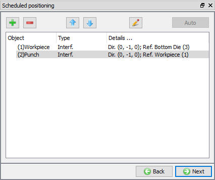
Scheduled positioning window
We need to set the approximate amount the punch will move during this operation. the dies are around 0.8” apart in this operation. We want the punch and the die to be 0.25” apart at the end of the operation, so change this value to 0.6” as shown in
Fig. 3DCFL1.24. Click  .
.
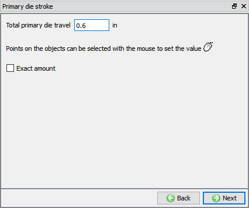
Primary die stroke
We want to form the part until the punch and die are within 0.25” of one another. In the Stopping Controls screen, place a check mark next to Distance between objects reaches to activate this option. With the mouse, click a point on
the bottom of the punch and then click a point on the top of the die. An arrow between these two points should get displayed on the screen. Set the value for this distance to 0.25” in the Y direction as shown in
Fig. 3DCFL1.25. Click  .
.
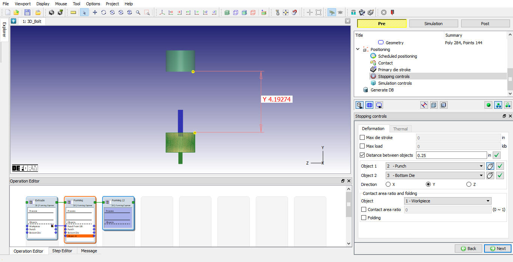
Stopping controls window
The number of simulation steps and the step increment are established by the Object Shape Complexity slider bar settings. If you want to change the default values, you can do by selecting user type radio button and define step definition.
We will accept the default values for this lab. Click  .
.
See the Status in Generate DB page, if we see Input error, check the data missing and complete it. For this lab sequence expect "DB generation is not required for this operation. It will occur at run time." message. Click on  tab to go to Next operation.
tab to go to Next operation.
Change operation name:
Change the Operation name to "Hex Head" in Operation editor.
Change the Complexity to the tick mark between “Simple” and “Moderate” and increase the accuracy to “Moderate” as shown in Fig. 3DCFL1.26. Click  until Top die page.
until Top die page.
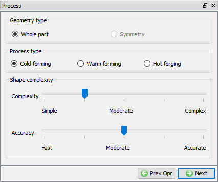
Process settings window
In Object page, select Define radio button as shown in Fig. 3DCFL1.27. and change the object name
as Punch, click  .
.
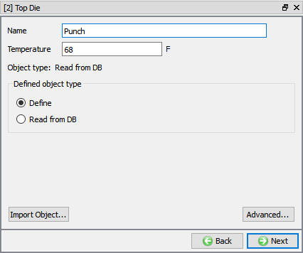
Top Die general definition window
Click on Load Geometry from Library  button, Import bolt-punch3.STL file. Then check the geometry using
button, Import bolt-punch3.STL file. Then check the geometry using  option. Click
option. Click  .
.
Use the previous operation's movement data, click on  until Scheduled positioning page.
until Scheduled positioning page.
Click on  button and select
button and select  radio button. Change the Positioning Object to the Punch and the
Reference to the Workpiece and -Y approach direction, then click
radio button. Change the Positioning Object to the Punch and the
Reference to the Workpiece and -Y approach direction, then click  (see Fig. 3DCFL1.28.).
Click on
(see Fig. 3DCFL1.28.).
Click on  until Primary die stroke page.
until Primary die stroke page.
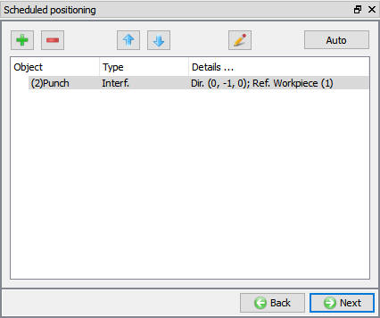
Scheduled positioning window
In Primary die travel page, define primary die travel value as 0.4466 in as shown in Fig. 3DCFL1.29. Click
 .
.
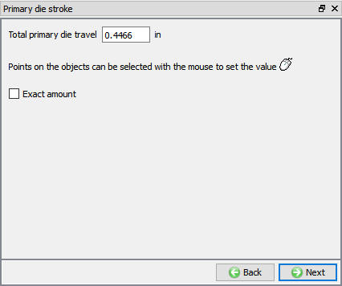
Primary die travel window
We want to form the part until the punch and die are within 0.03” of one another. In the Stop Controls screen, click “Distance between objects reaches” to activate this option and set this to 0.03”
in the Y direction. Click a point on the bottom of the punch and then click a point on the top of the die as shown in Fig. 3DCFL1.30. Click  .
.
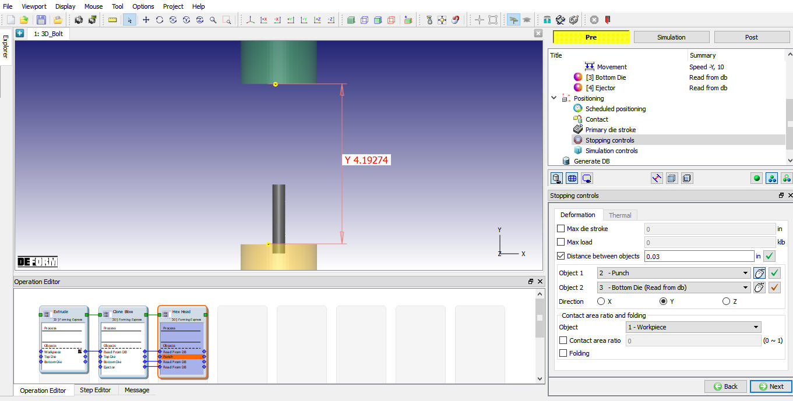
Stopping controls window
The number of simulation steps and the step increment are established by the Object Shape Complexity slider bar settings. We will accept the default values for this lab. Click  .
.
See the Status in Generate DB page, if we see Input error, check the data missing and complete it. For this lab sequence expect "DB generation is not required for this operation. It will occur at run time." message.
Save the project and click on  mode to run the simulation.
mode to run the simulation.
Click on the  action label to open the Run Options dialog as shown in Fig. 3DCFL1.31.
Use the default Continue Run option to select “Continue from the last step” option and then select the Simulation mode as Interactive and click on
action label to open the Run Options dialog as shown in Fig. 3DCFL1.31.
Use the default Continue Run option to select “Continue from the last step” option and then select the Simulation mode as Interactive and click on  button to run the simulation.
button to run the simulation.
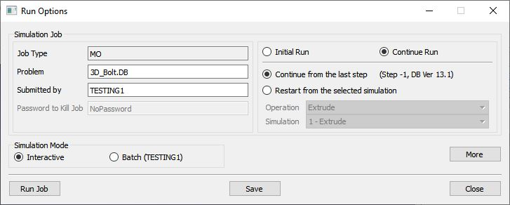
Run Simulation window
The progress of the simulation can be monitored as it is running by looking at the Simulation Message tab and Simulation Graphics from the Graphics display region in Simulation mode. As long as the  option is checked in Simulation Message tab, which is the default setting, the Message file will refresh automatically.
option is checked in Simulation Message tab, which is the default setting, the Message file will refresh automatically.
The Message file provides information about which simulation step the simulation is currently on and also gives information dealing with how well the simulation is running.
When the simulation is finished without any issues, check the messages in LOG file, when all operation completes we will see in messages in LOG file:"MULTIPLE OPERATION COMPLETED ". (See Fig. 3DCFL1.32.)
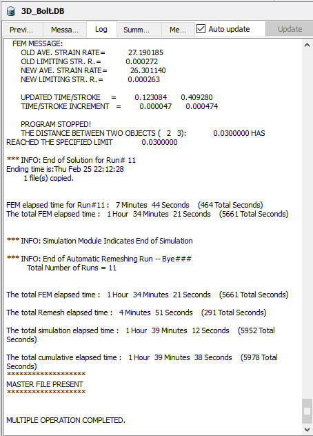
LOG File
After the completion of simulation, switch to  mode. In Step Browser click on
mode. In Step Browser click on  button to view all saved steps.
button to view all saved steps.
From the State variables list, click the Effective strain icon to plot the amount of strain that went into the workpiece. To change the plot settings, you can click on the  Set up icon. In this screen, you can display different kinds of contours (line, shaded or solid) as well as change the variable range that is shown on the contour bar (see Fig. 3DCFL1.33.).
Using the Settings option, the range of the contour bar can be user-defined. Feel free to experiment with the display of the different state variables and plot options.
Set up icon. In this screen, you can display different kinds of contours (line, shaded or solid) as well as change the variable range that is shown on the contour bar (see Fig. 3DCFL1.33.).
Using the Settings option, the range of the contour bar can be user-defined. Feel free to experiment with the display of the different state variables and plot options.
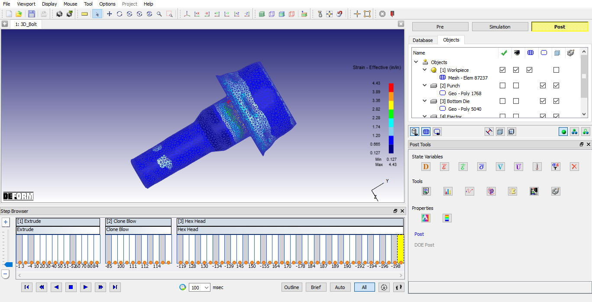
Strain Effective state variable plot
Use the Slicing  tool to slice the workpiece and dies. State variables can be displayed on the sliced surface and by adding a slicing plane using the
tool to slice the workpiece and dies. State variables can be displayed on the sliced surface and by adding a slicing plane using the  button, you can use multiple slicing planes. (See Fig. 3DCFL1.34.)
button, you can use multiple slicing planes. (See Fig. 3DCFL1.34.)
The slider bar in the SLICING window allows you to dynamically move the slicing plane.
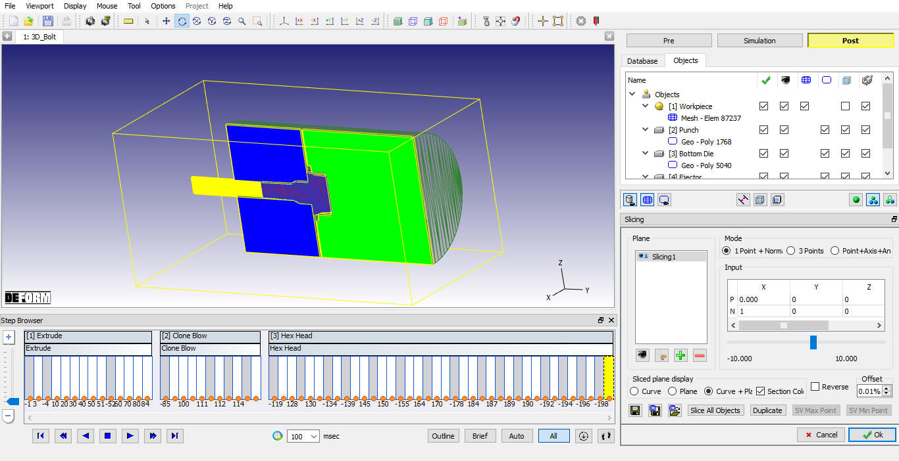
Slicing window
Select Step –1 from the step list, and then select the Point tracking icon from the Tools list. Select few points on the object, and track the points. If a state variable such as effective strain is still being displayed, the values of the variable will be graphed at these points vs. time as shown in Fig. 3DCFL1.3.35.
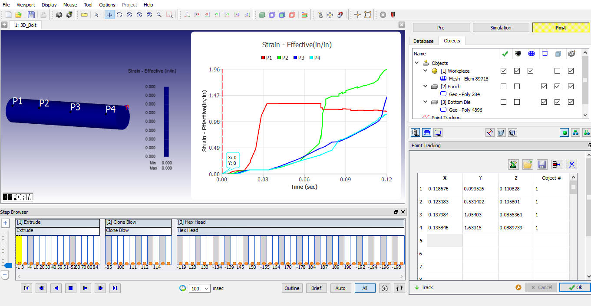
Point tracking graph plot
The amount of load required to deform an object is an important result that can be obtained from a simulation. Click on the  icon. When the GRAPH window appears, select only Punch
in the object list, the X-Axis is set to Stroke and the Y-Axis is set to Y Load and select operation 3 for operation selection. Click
icon. When the GRAPH window appears, select only Punch
in the object list, the X-Axis is set to Stroke and the Y-Axis is set to Y Load and select operation 3 for operation selection. Click  and a Load-Stroke curve will display in the DISPLAY
window as shown in Fig. 3DCFL1.36.
and a Load-Stroke curve will display in the DISPLAY
window as shown in Fig. 3DCFL1.36.
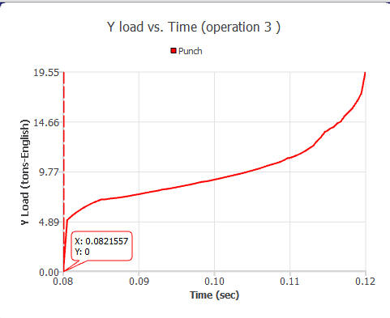
Load- stroke plot of Punch in Operation 3
After completion of Post process, switch to  mode.
mode.
Add Die stress 3D operation from Explorer operation list, open added Die stress operation by double click on operation in operation list.
We are currently only interested in the stress analysis of the punch in the hex head operation. So delete Bottom die (object3) and Ejector(object4) from the list by clicking  delete
button . Click
delete
button . Click  . (See Fig. 3DCFL1.37.)
. (See Fig. 3DCFL1.37.)
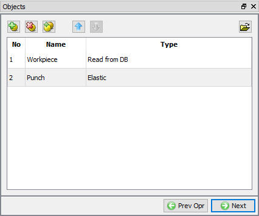
Die stress objects window
By default workpiece object type will be Read from DB, this object will be there upto DB generation, while generating DB it will be removed. Click  .
.
By default Elastic radio button will be selected for top die then click  to Mesh page.
to Mesh page.
Top die mesh page:
Define number of elements as 50000 as shown in Fig. 3DCFL1.38. and Generate mesh, then click  until material page.
until material page.
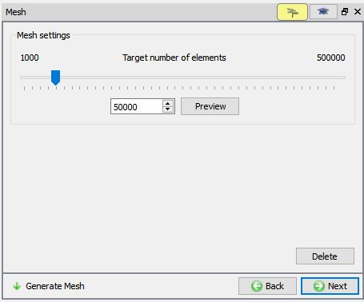
Mesh window
Assign material for Top die:
Import a die material from the material library. Chose AISI-H-13 from the list. Click 
Assign Boundary condition for Top Die:
Next we need to apply boundary conditions to the punch so that it does not fly off into space when the forming loads are applied to it.
In the “Deformation BCC” screen, select the “All” velocities to be fixed and then select the back surface of the punch (may require that you rotate the punch around).
Once you have selected this surface, all the nodes on the surface should be highlighted. These nodes are currently selected but the boundary condition hasn’t yet been applied. Click the  icon to apply the boundary condition to that surface. (See Fig. 3DCFL1.39.) Then click
icon to apply the boundary condition to that surface. (See Fig. 3DCFL1.39.) Then click  to Force interpolation page.
to Force interpolation page.
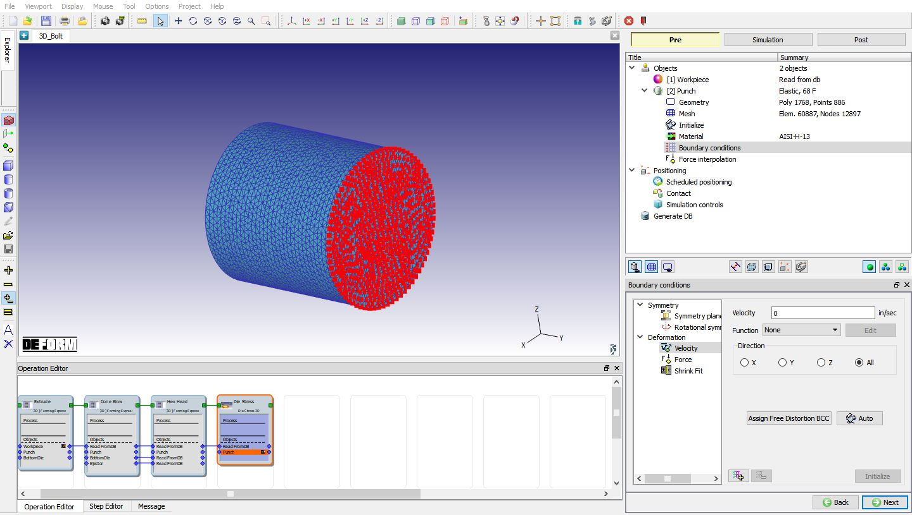
Adding Velocity Boundary condition
Force interpolation:
Once the mesh is generated, the forming loads from the workpiece need to be interpolated onto the punch. Click on Interpolate Force, Once the forces are interpolated, message will be displayed comparing the forces from the workpiece
to the new forces on the punch as shown in Fig. 3DCFL1.40. These forces should be relatively close to one another (typically
within about 5%). Click  unitl Generate DB page.
unitl Generate DB page.
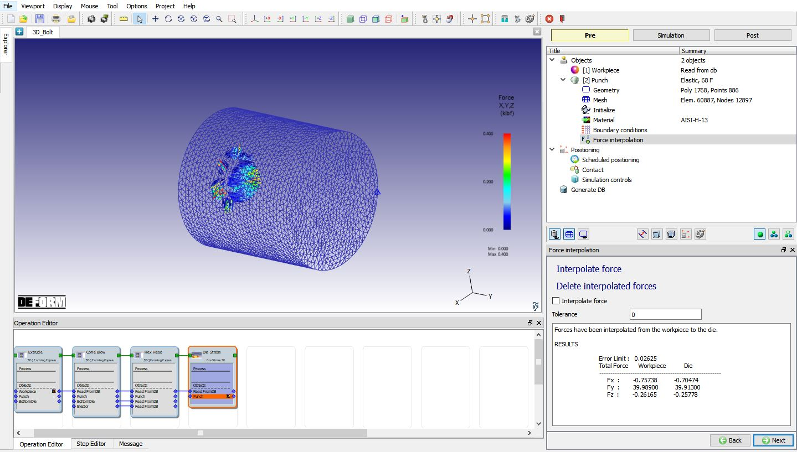
Force interpolation window
Check the data and generate the DB. After generating DB switch to  mode to run the simulation.
mode to run the simulation.
Click on the  action label to open the Run Options dialog. Use the default Continue Run option to select “Continue from the last step” option
and then select the Simulation mode as Interactive and click on
action label to open the Run Options dialog. Use the default Continue Run option to select “Continue from the last step” option
and then select the Simulation mode as Interactive and click on  button to run the simulation. As we click on
button to run the simulation. As we click on  button simulation starts.
button simulation starts.
After simulation is completed, switch to  tab.
tab.
The main variables to look at for a die stress simulation are the Effective stress and the Maximum principal stress.
The effective stress, is used to see whether any location in the die underwent plastic deformation. If any area of the die has an effective stress close to or exceeding the yield stress of the die material, that region is at risk of plastically deforming. (See Fig. 3DCFL1.41.)
The maximum principal stress is used to see which regions of the die are in a state of compression and which are in a state of tension. Maximum principal stress is extremely important in determining whether a die will experience any cracking due to
fatigue. To display the maximum principal stress, click the state variable “Set up” button  and then select Stress – Max Principal from the list. (See Fig. 3DCFL1.42.)
and then select Stress – Max Principal from the list. (See Fig. 3DCFL1.42.)
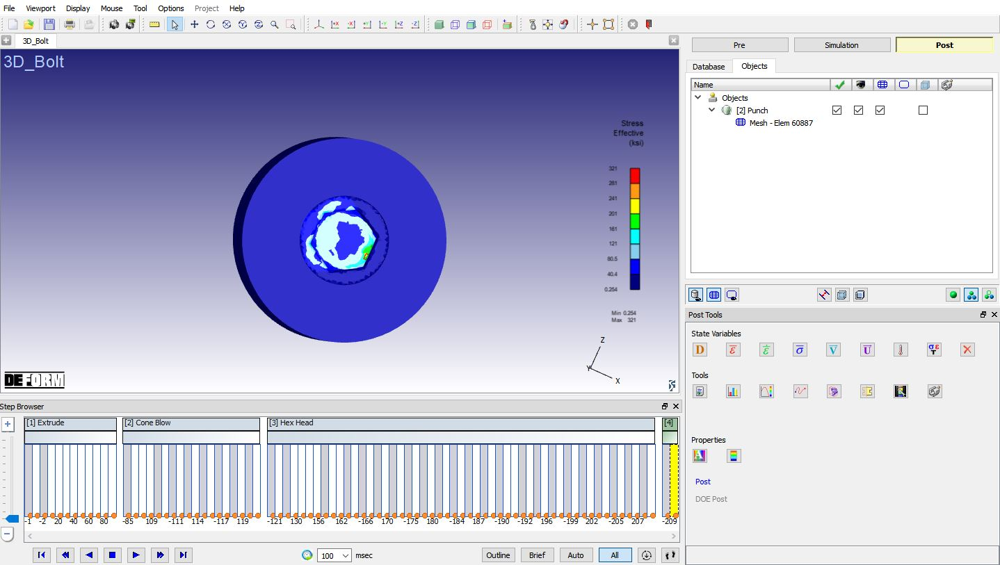
Stress-Effective plot
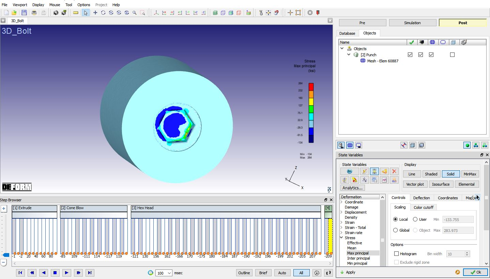
Max. Principal stress plot